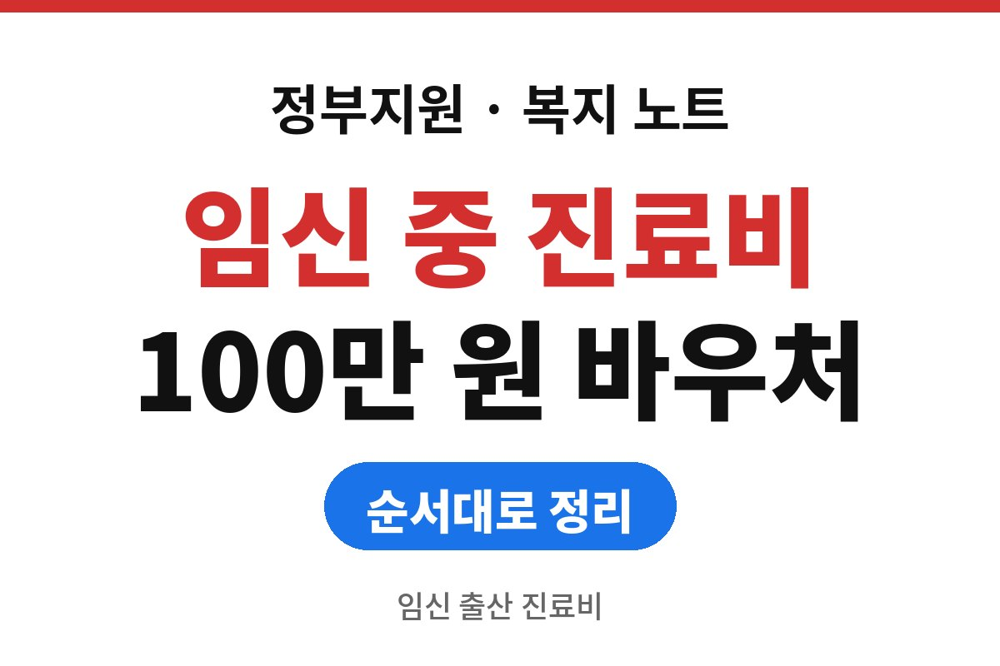
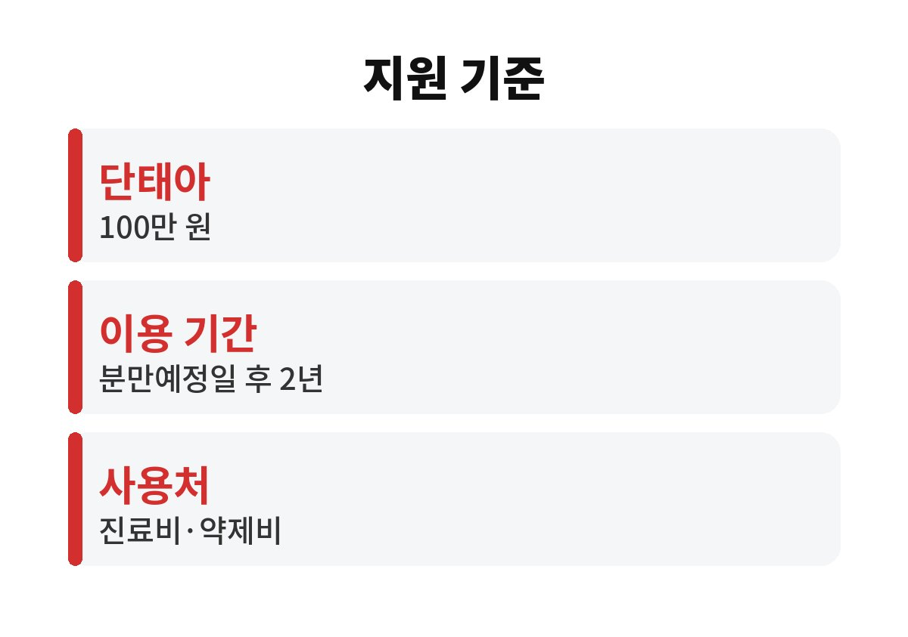
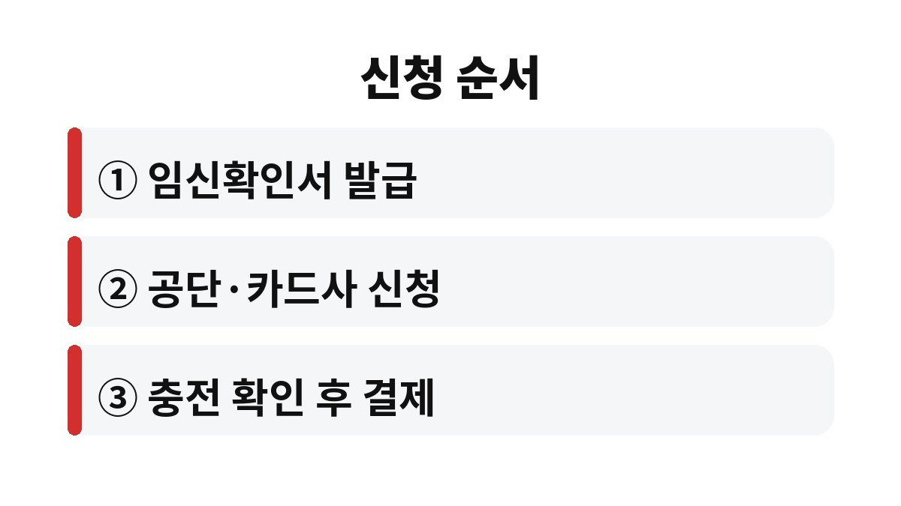

임신 출산 진료비 지원은 임신이 확인된 건강보험 가입자나 피부양자가 국민행복카드로 단태아 기준 100만 원 바우처를 받는 제도이다.
2026년 11월 기준으로 공개된 안내를 비교해 신청 순서와 사용 기간을 정리했다.
다태아 금액처럼 안내마다 숫자가 다른 부분은 확정하지 않고 공단 확인이 필요하다고 따로 적었다.
임신 출산 진료비 지원은 현금이 아니라 국민행복카드에 충전되는 바우처이다.
병원에서 진료비나 약제비를 결제하면 카드에서 자동으로 차감되는 방식이다.
단태아 100만 원이라는 숫자는 내가 비교한 안내에서 모두 같았다.
임신 중에 쓰는 이 바우처와 출산 후의 첫만남이용권은 별도 제도이다.
이름이 비슷해서 한 번에 받는 것으로 알기 쉬운데, 제도가 둘이라는 점부터 구분해 둔다.
신청 전에 가장 먼저 확인할 것은 임신확인서이다.
병원에서 발급받은 이 서류가 있어야 공단이나 카드사 창구에서 바우처 충전 절차가 시작된다.
서류 이름이 비슷한 다른 증명서와 헷갈리지 않도록 병원에 임신 확인용이라고 말하면 된다.
임신 출산 진료비 지원은 소득이 높든 낮든 임신 사실만 있으면 되는 제도처럼 소개되는 경우가 많다.
그러나 한 안내는 소득과 재산 심사 결과에 따라 달라질 수 있다고 적어 두었다.
나는 어느 쪽이 맞는지 공식 공고로 확인하지 못했으므로, 신청 전에 공단에서 대상 여부를 묻는 것을 권한다.
| 항목 | 확인한 내용 | 비고 |
|---|---|---|
| 지원 대상 | 임신이 확인된 건강보험 가입자·피부양자 | 임신확인서 필요 |
| 단태아 금액 | 100만 원 | 안내 공통 |
| 다태아 금액 | 안내마다 다름 | 공단에서 확인 |
| 이용 기간 | 분만예정일 이후 2년 | 신청 시점별 기준일 확인 |
| 사용처 | 진료비·약제비 | 안내에 적힌 범위 |

다태아는 한 안내에서 140만 원, 다른 안내에서 200만 원으로 적혀 있었다.
민간 정보 사이트끼리도 이렇게 다르니 쌍둥이를 임신했다면 숫자를 믿지 말고 건강보험공단에 직접 묻는 쪽이 안전하다.
소득 조건도 안내마다 표현이 달라서 공식 공고에서 확인해야 한다.
이용 기간은 짧아 보이지 않지만, 출산 후 정신없는 시기에 기한을 놓치는 경우가 생긴다.
분만예정일이 바뀌면 기준일도 달라질 수 있으니 변경된 날짜를 병원에서 다시 확인한다.
기한이 지나면 남은 금액이 소멸한다는 안내가 있으니, 큰 검사나 약제비는 기간 안에 쓰도록 일정을 잡는다.
창구는 하나만 고르면 된다.
온라인이 편하면 정부24나 공단 앱 안내를 따르고, 서류 문의가 필요하면 공단 지사를 찾아가는 편이 빠르다.
카드사별 발급 조건은 다를 수 있어 신청 직전에 확인한다.

이용 기간은 안내에 따라 분만예정일 또는 출산일 기준 2년이다.
출산 전에 신청했는지 후에 신청했는지에 따라 기준일이 달라진다고 적은 안내가 있다.
남은 금액은 기간이 지나면 사라진다는 안내도 있어서 기한을 달력에 적어 둔다.
출산 후 영유아 진료비에 쓸 수 있다는 내용은 1세 미만이라는 안내와 만 2세 미만이라는 안내로 갈렸다.
아이 진료에 쓸 계획이라면 대상 연령을 공단에서 확인한다.
사용처는 안내에 진료비와 약제비로 적혀 있다.
그 밖의 항목이 되는지는 결제 전에 공단이나 카드사에 묻는다.
처음 쓰는 날에는 결제 직후 영수증에 바우처 차감 내역이 찍히는지 확인한다.
차감이 안 되면 병원 접수대에서 바우처 결제로 처리됐는지 바로 묻는다.
본인부담금 일부를 일반 카드로 따로 낸 경우에는 어느 쪽에서 얼마가 빠졌는지 영수증에 적힌 금액을 나눠서 본다.
다음에 확인할 것은 임신확인서를 받은 날짜와 분만예정일이다.
다태아나 영유아 사용 범위처럼 숫자가 갈리는 항목은 건강보험공단 상담으로 묻는 쪽이 빠르다.
※ 2026년 11월 기준 공개된 정보를 정리한 글이며, 정확한 대상 요건·금액·신청 기간은 복지로·정부24·관할 주민센터의 공식 공고를 확인하길 바란다.